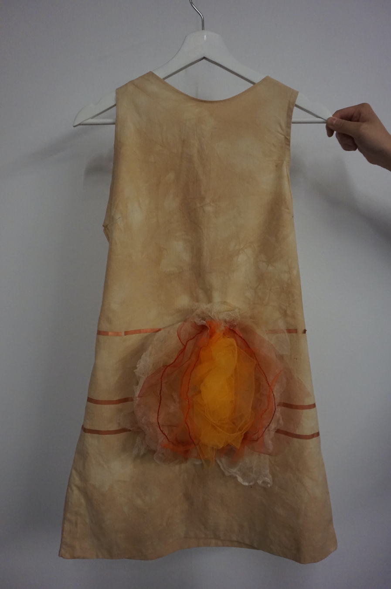
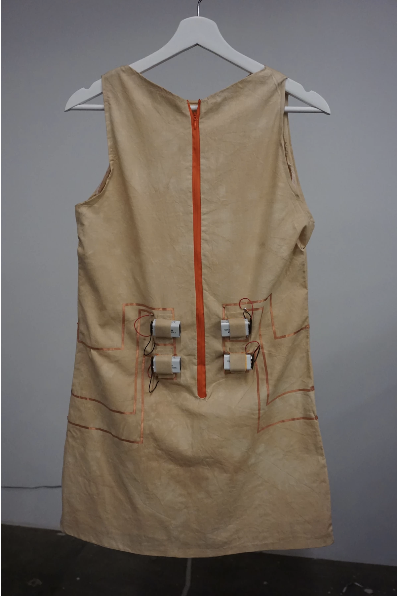
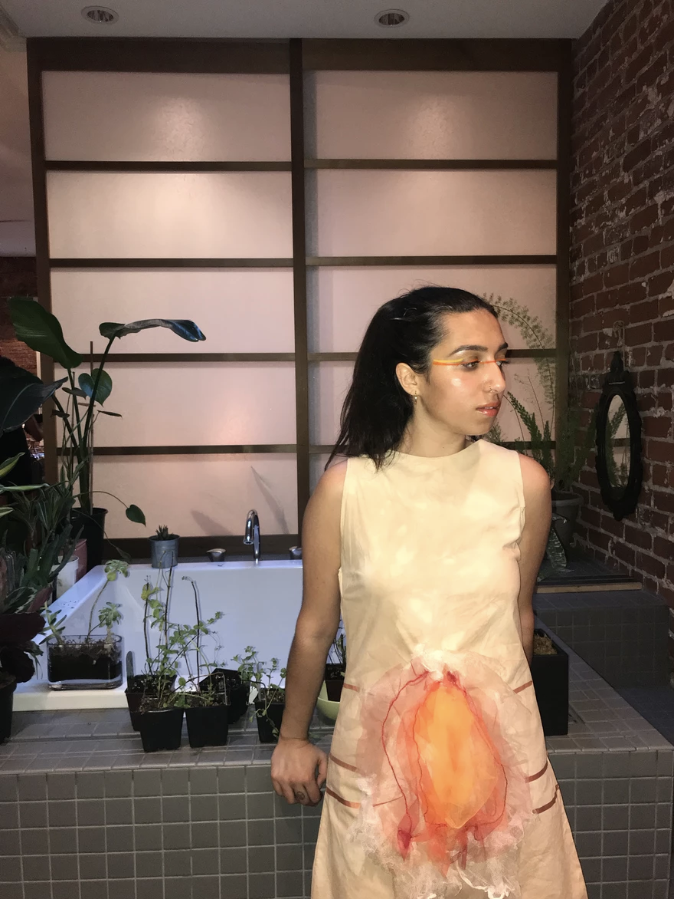
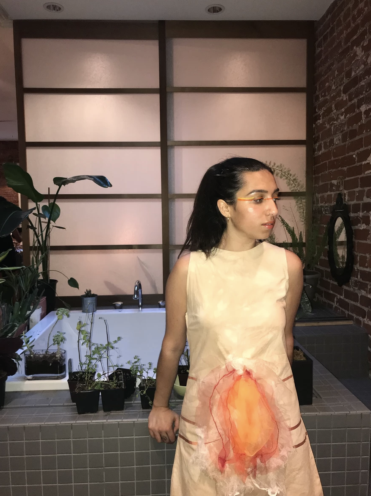

BLOOM
DX arts Course Work, 2019

Bloom aims to redefine, recontextualize, and reclaim the idiom of the vagina as a flower. My piece aims to empower the person who identifies as female who wears the garment. The switches activate the motion of the vagina causing it to open and contract through the use of muscle wire. This also the wearer to have full autonomy of their body. The vagina itself is made primarily of tulle which is a textile primarily associated with feminine clothing and activities, however, I chose bright reds, yellows, and oranges to contradict this stereotype associated with the fabric. Sewed into the tulle petals are four pieces of muscle wire which is what allows the piece to move. For the dress itself I used muslin which I hand dyed with tea to represent the menstrual cycle, and how messy but also organic and natural it is. In this way, I was able to make the invisible, visible as well as making something beautiful out of something that is both stigmatized and sometimes causes people to feel shame and embarrassment. The person wearing this garment thus will be making a statement against the shame surrounding female reproductive health as well as claiming ownership and autonomy over their body.


